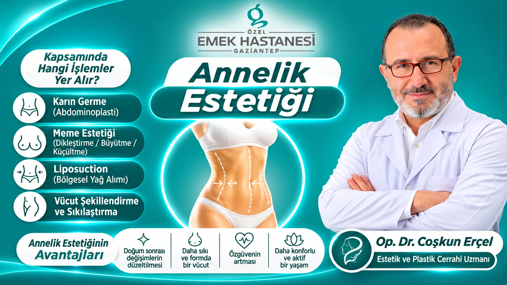

Pregnancy and childbirth are special periods in which a woman's body undergoes significant physical and hormonal changes. During this time, widening of the abdominal area, loosening of the skin, changes in breast volume and fat accumulation in different parts of the body may occur. After childbirth, some changes improve on their own over time, while others may become permanent.
Although paying attention to diet and exercising regularly are important parts of a healthy life, it may not always be possible to regain the body's pre-pregnancy appearance. At this point, aesthetic and plastic surgery procedures planned according to the person's needs may come into consideration.
Post-pregnancy aesthetic surgery (Mommy Makeover) is a personalised treatment approach that aims to correct the changes that occur in the body after pregnancy and childbirth, in which more than one aesthetic surgical procedure can be performed together or in stages.
What Is a Mommy Makeover?
Mommy Makeover is the general name for aesthetic surgical procedures that address the changes in shape that occur in the abdomen, breasts and other parts of the body after childbirth.
The main aim of this approach is to reshape the body's contours following the physical changes experienced before pregnancy and to help achieve an appearance in line with the person's expectations.
A Mommy Makeover does not consist of a single operation. The appropriate procedures are determined by assessing the patient's body structure, skin elasticity, the condition of the abdominal muscles and the changes in the breast tissue.
The most commonly chosen procedures include tummy tuck, aesthetic breast surgery, liposuction and body contouring procedures.
Which Procedures Are Performed as Part of a Mommy Makeover?
A Mommy Makeover is planned differently according to each woman's needs. The main procedures that may be performed are as follows:
Tummy Tuck Surgery (Abdominoplasty)
During pregnancy, the skin and muscles of the abdomen may stretch considerably. After childbirth, excess skin, stretch marks and separation of the abdominal muscles may be seen in some women.
Tummy tuck surgery is performed particularly to remove excess skin in the abdominal area and, in suitable patients, to repair separated abdominal muscles.
During the operation, excess skin and fat tissue may be removed and the separation of the muscles in the abdominal wall may be corrected. In this way, a flatter and firmer-looking abdomen is the aim.
Aesthetic Breast Surgery: Lift, Augmentation and Reduction
Breast tissue volume may change during pregnancy and breastfeeding. After breastfeeding, loss of volume, sagging or distortion of shape may occur in the breasts.
Different aesthetic breast operations may be chosen according to the patient's needs:
- Breast lift: Aims to reshape sagging breast tissue and move the nipple to an appropriate position.
- Breast augmentation: Aims to enlarge breasts that have lost volume, using methods such as implants or, in suitable patients, fat injection.
- Breast reduction: Performed to reduce large, heavy breast tissue and to reshape the breast.
Which procedure is performed is determined according to the current condition of the breast tissue and the person's expectations.
Liposuction (Regional Fat Removal)
After pregnancy, regional fat deposits may form around the abdomen, waist, hips and buttocks. Some fat deposits may be resistant despite diet and exercise.
Liposuction is a procedure in which fat tissue that has accumulated in specific areas of the body is removed with the help of special cannulas.
This procedure is not a method of weight loss. Its main aim is to refine the body's contours and provide regional shaping.
Body Contouring and Tightening
After childbirth, skin laxity and changes in contour may be seen in different parts of the body.
Different contouring procedures for the abdomen, waist, back, hips and thighs may be planned according to the patient's needs.
The aim here is not only to reduce fat tissue but also to create a more balanced appearance across the body's overall contours.
What Are the Advantages of a Mommy Makeover?
A Mommy Makeover allows more than one physical change that occurs after childbirth to be assessed within the same treatment plan.
The advantages it may offer in suitable patients are as follows:
- Correction of changes after childbirth: Changes in the shape of the abdomen and breasts can be addressed with personalised surgical procedures.
- Firmer and more balanced body contours: Body contours can be reshaped by removing excess skin in the abdominal area and reducing regional fat.
- Support for satisfaction with personal appearance: Achieving results in line with the person's expectations may have a positive effect on body image and self-confidence.
- Assessing more than one area together: In suitable patients, different aesthetic procedures can be combined within a single surgical plan. Whether this is safe is assessed according to the patient's health and the extent of the operation.
Who Is a Mommy Makeover Suitable For?
A Mommy Makeover may be considered for women who have permanent changes in their body after childbirth and who wish to have these changes corrected surgically.
However, not every woman may be a suitable candidate for these operations.
In general, the following criteria are important in the assessment:
- Changes to the body after childbirth being largely complete,
- Weight having stabilised,
- General health being suitable for surgery,
- Examination of the changes in the abdominal and breast areas,
- Having enough time and support to recover after the operation,
- Having realistic aesthetic expectations.
Particularly in women who have recently given birth and are still breastfeeding, the timing of the operation should be considered carefully. It is generally usual to wait until breastfeeding has finished and the body has stabilised hormonally and physically.
In addition, women planning another pregnancy in the near future are advised to discuss the timing of the operation with their doctor.
Recovery After a Mommy Makeover
Because a Mommy Makeover can involve more than one surgical procedure, recovery varies according to the extent of the operations performed.
Particularly after tummy tuck surgery, patients may need to keep their movements controlled for a while. Oedema, bruising and tenderness may also be seen after breast operations and liposuction.
Points to bear in mind during recovery are as follows:
- The corset and medical garments recommended by the doctor should be used.
- Heavy lifting and intense physical activity should be avoided for a while.
- Wound care instructions should be followed.
- Attention should be paid to diet and fluid intake.
- Follow-up examinations should be attended regularly.
- The body should be given enough time to heal fully.
It is particularly important for mothers with young children to plan support in advance for childcare and daily responsibilities after the operation.
Are the Results of a Mommy Makeover Permanent?
The results of procedures performed as part of a Mommy Makeover are planned to be long-lasting. However, weight stability, lifestyle and any later pregnancies may influence how well the appearance achieved is maintained.
For example, the body contours achieved after a tummy tuck and liposuction may be affected again by significant weight changes. The results of aesthetic breast surgery may also be affected by ageing, gravity and hormonal changes.
For this reason, it is important to maintain healthy eating habits and an ideal weight after the operation.
What Should Be Considered Before a Mommy Makeover?
The assessment before the operation is one of the important stages of a successful and safe surgical process.
During the examination carried out by a plastic surgery specialist, the condition of the abdominal muscles, skin elasticity, fat distribution and the structure of the breast tissue are examined.
The patient's medical history, the medicines they use, smoking and any chronic illnesses are also assessed.
If more than one operation is planned in the same session, the length of surgery, the risk of bleeding, clot formation and anaesthesia-related risks should be addressed separately. In some patients, it may be safer to carry out the procedures in stages.
Frequently Asked Questions
How long after childbirth should you wait for a Mommy Makeover?
It is generally usual to wait for the body to recover, weight to stabilise and breastfeeding to finish after childbirth. The exact timing is determined by individual assessment.
Can a Mommy Makeover be performed in a single operation?
A tummy tuck, aesthetic breast surgery and liposuction may be performed in the same session in suitable patients. However, because each patient's health and the extent of the operation differ, some procedures may need to be performed in separate sessions.
Is a Mommy Makeover done to lose weight?
No. A Mommy Makeover is not a weight-loss method. In people whose weight has largely stabilised, it aims to correct excess skin, sagging and regional fat deposits that have formed after childbirth.
Can you become pregnant again after a Mommy Makeover?
Yes, pregnancy is possible after the operation. However, a new pregnancy may change the aesthetic results achieved, particularly in the abdominal and breast areas. It is therefore important to assess any plans to have children before the operation.
Does a Mommy Makeover leave scars?
Operations such as a tummy tuck and aesthetic breast surgery may leave scars from the surgical incisions. The appearance of these scars may fade over time, but they cannot be guaranteed to disappear completely. The placement of the incisions is planned before the operation.
Does a Mommy Makeover boost self-confidence?
Correcting physical changes that a person has long been uncomfortable with may contribute positively to body image and feeling good about oneself. However, results vary from person to person.
Conclusion: A Personalised Approach to Your Changed Body After Childbirth
While motherhood is one of the most special experiences in a woman's life, it can also cause permanent physical changes in the body. Conditions such as loosening in the abdominal area, loss of volume in the breast tissue and regional fat accumulation may lead some women to feel different about themselves in daily life.
A Mommy Makeover addresses these changes not with a single standard procedure but with surgical methods planned according to the person's anatomical features and needs.
With procedures such as a tummy tuck, breast lift, breast augmentation, breast reduction and liposuction, the aim may be to reshape the body's contours.
At the Aesthetic and Plastic Surgery Department of Emek Hospital Gaziantep, you can talk to Op. Dr. Coşkun Erçel about a Mommy Makeover and get information about personalised surgical options for the changes in your body after childbirth.
This article is for information purposes. Every surgical procedure carries its own specific risks. Suitability and the treatment plan should be determined after an examination by a specialist doctor.